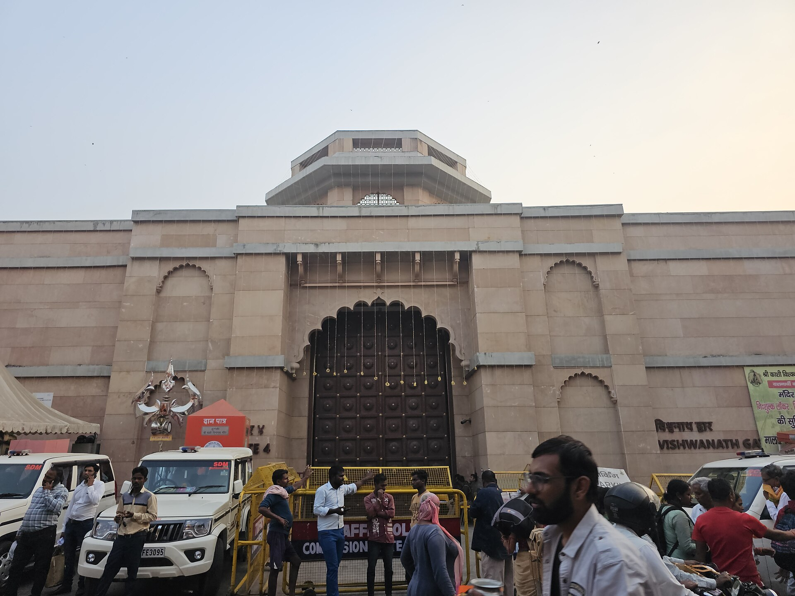

Kashi Vishwanath Temple
One of the twelve Jyotirlingas and the heart of the city. Mangala Aarti runs 3–4 AM, Bhog Aarti 11:30 AM–12 PM, Sandhya Aarti around 7 PM. Phones and bags are not allowed inside — we park close to a permitted gate and hold your belongings in the car.